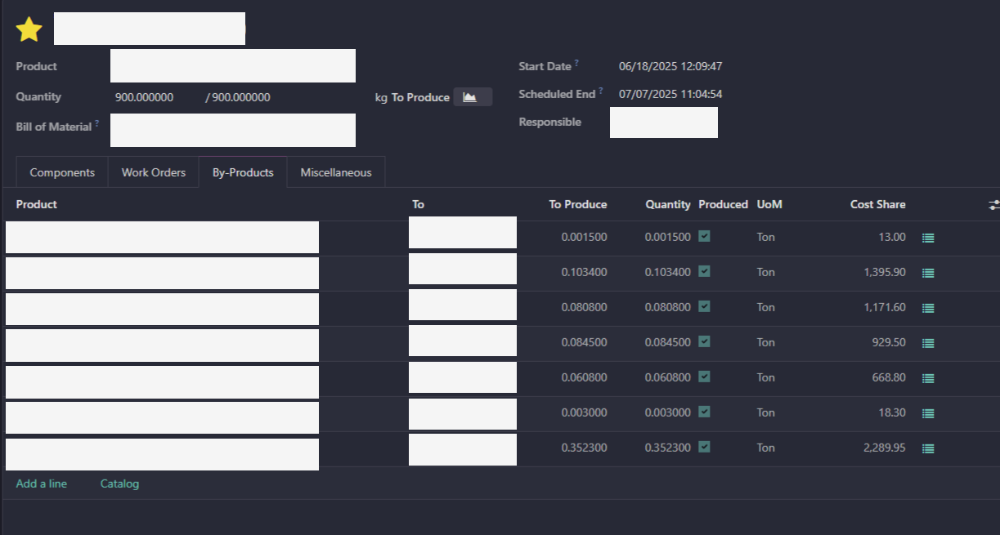
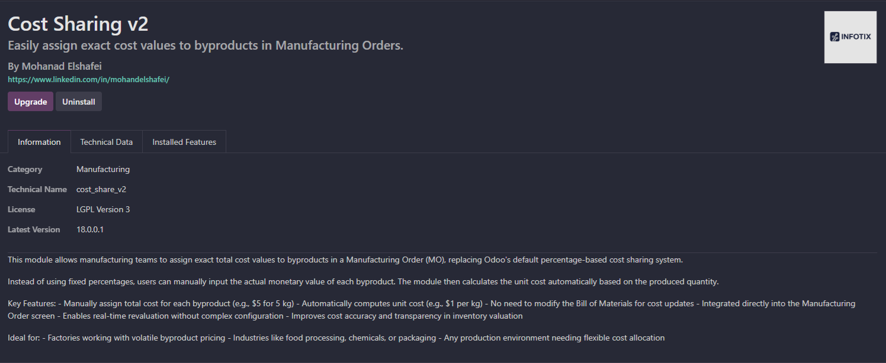

This module solves a practical need observed in real production environments — including factories like El Waily Group — where percentage-based cost sharing is not sufficient or flexible enough.
With this module, you can manually assign exact monetary values to byproducts in a manufacturing order. The system then calculates the unit cost automatically, helping you improve traceability and cost control.

In this view, you can see the exact cost values entered for each byproduct — no percentages, just real amounts in your working currency.

The system automatically computes unit cost (e.g., 5 kg = $5 → $1/kg). This allows accurate product valuation without relying on rigid predefined rules.
Designed for fast-paced, real-world factories that need to adapt cost logic based on dynamic pricing.